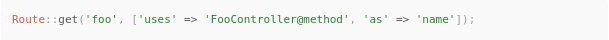
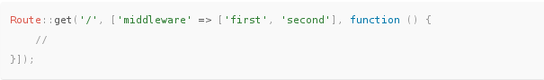
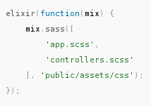

- Routing.
- Resourceful Controllers.
- Eloquent ORM.
- Blade Templating.
- Artisan Cli
- Migrations and Database Seeding.
- Queues.
 Laravel
Laravel
The PHP Framework For Web Artisans
By
Jonatan Frank
Features
New in Version 5+
- Route Middleware
- Contracts (interface)
- Scheduler
- Tinker / PsySh
- DotEnv (.env)
- Laravel Elixir
- Laravel Socialite
- Symfony VarDumper
Architecture

Folder Structure

Routing
app/Http/routes.php
Controllers
app/Http/Controllers

HTTP Middleware
HTTP middleware provide a convenient mechanism for filtering HTTP requests entering your application. For example, Laravel includes a middleware that verifies the user of your application is authenticated. If the user is not authenticated, the middleware will redirect the user to the login screen. However, if the user is authenticated, the middleware will allow the request to proceed further into the application.
HTTP Middleware
HTTP Middlewares
Assigning Middleware To Routes
Laravel 5.2 implements Cache & Session Services into a "web" middleware route so if you want to use them you must include your route inside this middleware
Blade Templates
Eloquent ORM
The Eloquent ORM included with Laravel provides a beautiful, simple ActiveRecord implementation for working with your database. Each database table has a corresponding "Model" which is used to interact with that table. Models allow you to query for data in your tables, as well as insert new records into the table.
php artisan make:model Userphp artisan make:model User --migrationphp artisan make:model User -m
Queues
The Laravel queue service provides a unified API across a variety of different queue back-ends. Queues allow you to defer the processing of a time consuming task, such as sending an e-mail, until a later time which drastically speeds up web requests to your application.
Task Scheduling
In the past, developers have generated a Cron entry for each task they need to schedule. However, this is a headache. Your task schedule is no longer in source control, and you must SSH into your server to add the Cron entries. The Laravel command scheduler allows you to fluently and expressively define your command schedule within Laravel itself, and only a single Cron entry is needed on your server.
* * * * * php /path/to/artisan schedule:run >> /dev/null 2>&1
Tinker \ PsySh
Better Show How it works.
Elixir
Laravel Elixir provides a clean, fluent API for defining basic Gulp tasks for your Laravel application. Elixir supports several common CSS and JavaScript pre-processors, and even testing tools. Using method chaining, Elixir allows you to fluently define your asset pipeline. For example:
